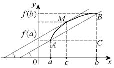

Теорема Лагранжа (теорема о конечных приращениях)
Если:
1˚.  – непрерывна на
отрезке
– непрерывна на
отрезке  ,
,
– непрерывна на
отрезке ,2˚. на интервале  существует
производная ,
существует
производная ,
существует
производная , то существует, по крайней мере, одна точка  такая, что или
.
такая, что или
.
такая, что или
.На кривой найдется, по
крайней мере, одна точка  , в которой
касательная параллельна хорде .
, в которой
касательная параллельна хорде .
, в которой
касательная параллельна хорде .
Доказанная формула называется формулой Лагранжа
или формулой конечных приращений. Так как ,
то , ,
где , откуда ,
.